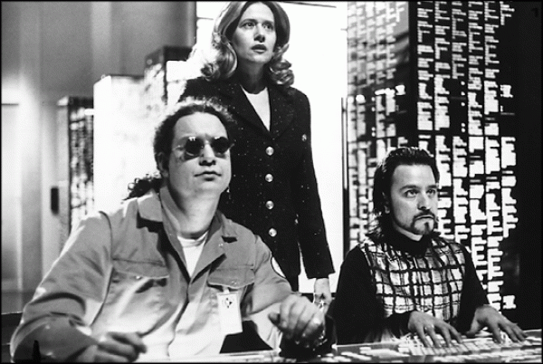
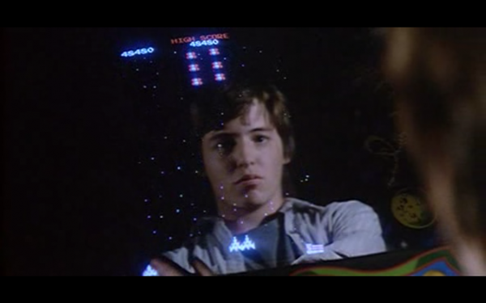
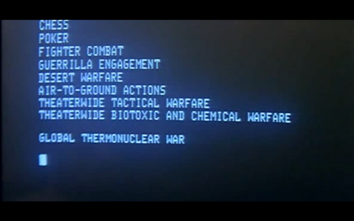

-
Ubiquitous Economies, Free Kevins: Interview with Laurel Ptak
by Idiom October 14, 2010
Tonight at Art in General, curator Laurel Ptak screens a pair of ‘classic pirated hollywood hacker movies in the name of open culture.’ Stephen Squibb discussed the eighties, representations of technology and intellectual property with Ptak in advance of the event, the first in a series of FREE KEVIN screenings.
Idiom: So what films are you showing?
Laurel Ptak: I’ll be screening two movies and sticking to the ‘classics’ for this particular iteration (more FREE KEVIN screenings currently being planned for Stockholm, L.A., London, and Turku (Finland) in the coming months):
6:00-7:45 pm – WAR GAMES (1983)
7:45-9:00 pm – HACKERS (1995)But the event also serves as an informal ripping party, so people who want copies of any of the files from the full collection of films are encouraged to bring their USB, hard drives, laptops to lift material for later viewing.
Idiom: Hackers and War Games! Old favorites, albeit from very different moments. Two images stand out. First, in War Games, the climatic, computerized realization that nuclear war is bad (!) – which always stood in contrast to SkyNet’s similar conclusion with opposite consequences. Second, in Hackers, the bad corporate dude riding a skateboard outside the limo to pick up some essential plot point in the form of a disk, which always felt like the beginning of hipsterism to me: when the cultural codes are so scrambled as to demand a total investment in illegibility for its own sake. What drew you to these late culture industry masterpieces?
LP: Of course I’d seen both of these movies when I was a kid, but I got newly excited about them last year when I was starting to think a lot about issues around intellectual property and open culture. The hacker became a really compelling cultural figure to examine.
As a curator, I to explore everything – from the academic to the mass cultural – produced around the subject matter I’m interested in. One day I typed the search query ‘hacker’ into a torrent sharing site to see what might come up there. What I found was this unbelievable collection of movies, documentaries, TV shows, animations, interviews depicting the hacker. 15.4 GB worth…that’s 28 videos…over 24 hours of material. And I watched all of it, transfixed. The collection was assembled by an anonymous peer-to-peer file sharer known to me only as ‘pirateturk’. I really admired this person’s curatorial work, it was an extremely well-edited collection, one that portrayed incredibly diverse representations of the hacker, and I further admired their desire to share this collection with others by releasing it as a torrent. It was in this spirit that I decided to organize a screening series with this material.
War Games (1983) and Hackers (1995) are probably the two most classic films inside this collection. And you’re completely right, these movies are from very different cultural moments, roughly a decade apart, but they read well against one another. Both are totally schematic and overblown at the level of representation, but there are some compelling dynamics that can still be observed. Ultimately I think these movies frame a telling narrative about the larger social, political, and economic shifts in technology that unfolded during this precise time period, played out here through and around the figure of the hacker.
It was during the 1980s that the personal computer became available to consumers for the very first time and War Games portrayed this technology at the precise moment when the public’s interest in it had been peaked, yet cultural understanding of it was still being shaped. Hackers did the same for the emergence of the internet and network culture in the 1990s. While by present standards, these technologies feel normalized, if not ubiquitous, these films narrate and aestheticize in revealing ways the deep anxieties and uncertainties that these technologies unleashed at the moment of their adoption into mainstream culture. The hacker thus becomes a crucial figure through which technological imaginaries play out inside popular culture, serving as a means for us to collectively work through the extremes of anxiety and utopia that new technologies seem to unleash.
Idiom: Is there a similar innovation that you see as being central to the first decade of the 21st century in the way that personal computing was to the 80s and the network was to the 90s?
LP: Hmmm. Web 2.0 and social media maybe? And look, we’ve just got our first hyperbolic Hollywood movie about it…The Social Network. I’ll probably be screening that in twenty years from now…
Idiom: I was afraid you’d say that. What’s interesting about all of these is that they are not only moments in the dialectic of ideology and technology, but they also represent portraits of youth painted by an older generation. To what extent do our anxieties about technology provide a convenient outlet for our fears about getting older? How does technology interact with the traditional generational cycle?
LP: I’ve never thought about it in those terms, but that’s interesting. Maybe relatedly, in many of these films you do start to see some really fascinating dynamics between body and machine.
In War Games we constantly view the teenage body through its reflection in the machine. In fact we continue to watch him evolve as a character here in the computer’s monitor, gauging his expressions not on his actual face, but via his reflection in the computer.
In Hackers there is a similar dynamic but here its the portrayal of the constant threat of the computer virus. Self-replicating, mutating, evolving, exponential, and nodal, the virus threatens information as well as maps new forms of spatiality mirrored by the internet and globalization. It acknowledges, exploits, and heightens fear around the porous and deterritorialized boundaries of the network. The computer virus can never be stopped, it can only be treated. It hovers as an invisible and ever-present threat, and as a type of surveillance, constantly instructing human behavior. Even on the level of language, the computer virus’ underpinnings are of course enormously coded, implicating the body and connoting sickness, illness and death. The term itself was notably coined in the early ’80s in parallel with the unfolding AIDS crisis.
Idiom: That’s fascinating.
Can you talk a little about the pirating aspect of the event? Do you see this as a political move? A social one? What’s at stake in pirating these films within the gallery space?
LP: Yes, both political and social. There is this infamous quote from Mark Getty (businessman and grandson of oil magnate J. Paul Getty, a co-founder of Getty Images) in an interview with The Economist in 2000 where he said “Intellectual property is the oil of the 21st century.” It’s a bit polemically stated, but I think it’s still a clear and accurate soundbite for what might be at stake here. Also, as early as the 1980s the WTO had made intellectual property a priority with its Agreement on Trade Related Aspects of Intellectual Property Rights (TRIPS), I was fascinated to learn recently that Hollywood often leaned on them as a sort of international legal arm.
But I suppose my personal interest in these questions first originated from a specific cultural moment in New York City that I experienced in the early 00s–the end of the ‘dot com boom’. When I graduated from college it was a time when everyone my age was being snatched up by start-ups to more or less invent the internet, so my adult subjectivity was formed directly under the conditions of this emerging digital and information economy. Watching an entirely new system for communication and commodifiation be built up around me made me reflect a lot on the features, rules, and economies of existing systems and this emergent one.
I think a lot about the ways in which the notions of public and private are being reshaped in contemporary culture. Who owns information and knowledge? Who produces it and who consumes it and who profits from it? What are the politics and conditions of its production, circulation, and distribution? What are the terms on which it should be shared? The digital age has shown us how relatively easily and inexpensively information and knowledge are able to circulate. But it has also rendered equally visible how hard the state and the corporation will fight to keep things copyrighted or privatized in the interest of certain economies. This can be so clearly at odds with the ways that individuals wish to use and share these things.
A handful of forthcoming curatorial projects I’m working on at the moment deal with intellectual property issues in various ways. One is a collaboration with artist David Horvitz that entails the launching of 25 artworks by recent Bard MFA grads into the public domain; another is a collaboration with artist Marysia Lewandowska, we are co-editing an intellectual property reader for the art world. While I think IP issues have been well discussed inside certain discourses, like the legal one or the new media one for instance, in my opinion the art world still seems strangely oblivious or indifferent to these questions. So I see work to be done there.